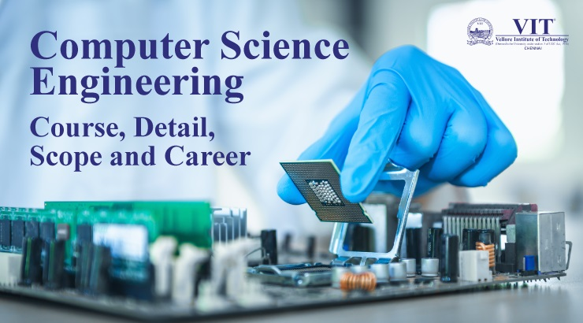

Welcome to Department of CSE
Bachelor of Technology in Computer & Communication Engineering is designed to provide expertise to those students who seek specialization in Computer Communication Technologies and Telecommunications. The main focus of the programme is on Computer Networks (Wired and Wireless) and Telecommunications technologies. The program offers courses in Computer Science, Cloud Computing, Multimedia Communications and Big Data Analytics. Emphasis is placed throughout the course on developing the practical skills and in-depth knowledge required by the present industrial scenario. This program equips students to engage in research focusing on the fusion of multi-disciplinary skills employed in designing modern computing devices with communication channels, communication systems with advanced computer algorithms and systems. The program provides experiential learning on basic and advanced courses in computer science, communication networks, security and associated subjects.It is a professional degree that integrates communication techniques, problem-solving strategies, simulation skills and mathematical foundations with the hands-on training required to solve real-world problems.
Vision
To be a center of excellence in Computer science & Engineering education and research, empower the lives of individuals to fulfill their academic excellence, professional passions, and partnership for community development.
Mission
To impart knowledge through the state-of-the-art concepts and technologies in Computer Science and Engineering. To inculcate values of professional ethics, leadership qualities and lifelong learning. To prepare professionals for employment in industry, research, higher education, community partnerships,and entrepreneurship to benefit the society.